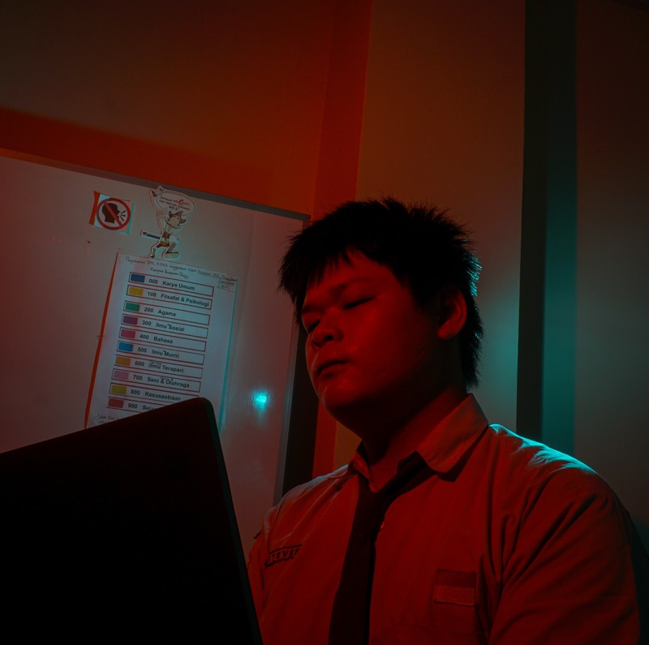
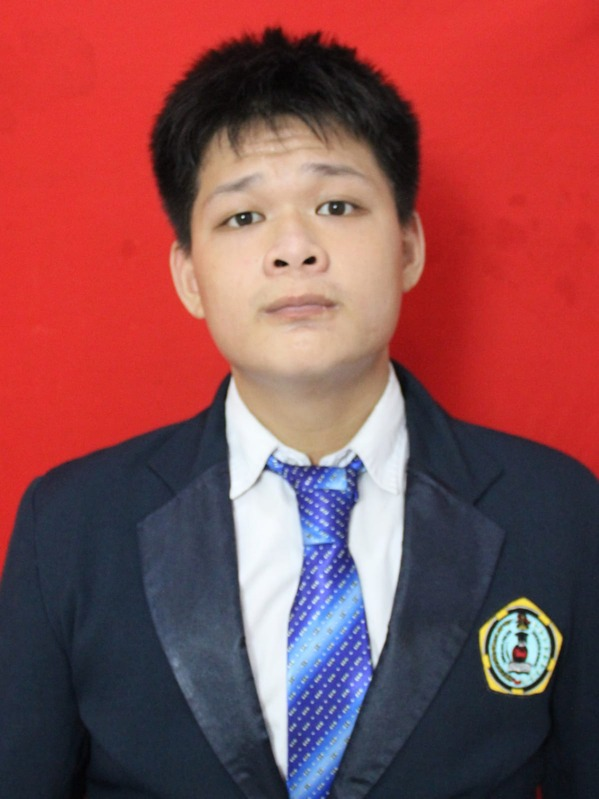
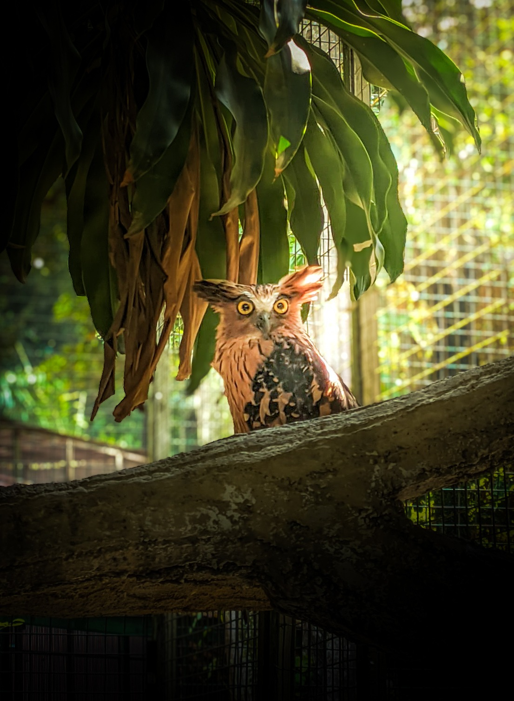

PORTOFOLIO PRIBADI STEVEN
Merekam momen.
Merangkai cerita.
Melihat lebih dekat. Membuat sesuatu yang berarti.

STORYTELLING
RASA INGIN TAHU ✳ PROSES KREATIF ✳ CERITA VISUAL ✳ RASA INGIN TAHU ✳ PROSES KREATIF

01 / PROFILE01 / TENTANG SAYA
Ruang untuk
terus bertumbuh.
Saya Steven, seorang kreator visual yang memadukan fotografi, desain, dan penceritaan untuk menghasilkan karya yang komunikatif dan berkesan.
Saya mempelajari bahasa Inggris dan desain untuk mengembangkan kemampuan komunikasi serta memperluas perspektif kreatif. Melalui fotografi, animasi, editing, desain, dan videografi, saya berupaya menerjemahkan gagasan menjadi karya visual yang jelas dan bermakna.
Terhubung dengan saya02 / KEMAMPUAN
Keahlian &
eksplorasi.
Dari menangkap momen hingga menyusun visual, saya terus bereksperimen dengan berbagai cara untuk bercerita.
Fotografi
Animasi
Editor
Desainer
Videografi

03 / PILIHAN KARYA
Karya.
Kumpulan eksplorasi visual dalam fotografi dan desain. Pilih salah satu karya untuk melihatnya lebih besar.
SETIAP KARYA ADALAH BAGIAN DARI PROSES BELAJAR.
04 / HUBUNGI SAYA
Mari membuat
sesuatu bersama.
Terbuka untuk berbagi ide, berdiskusi, dan menjajaki kesempatan kolaborasi kreatif.
stevenchia17@gmail.com